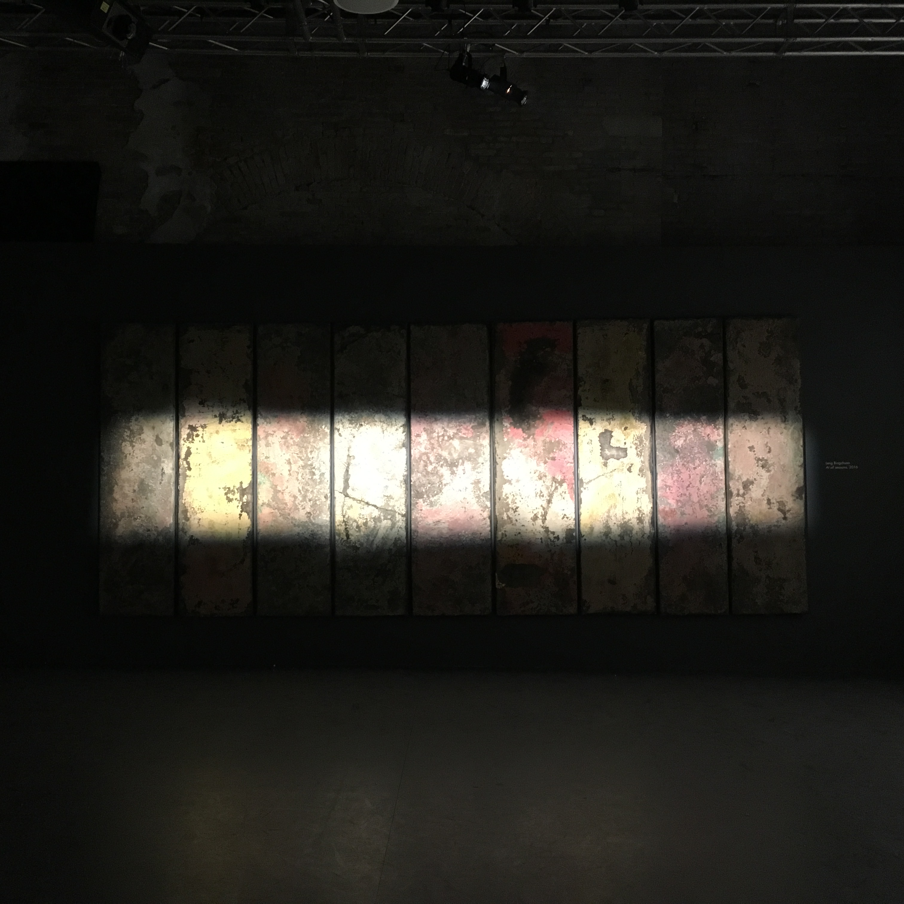

HOME



Who we are?
We are a network of academics and industry experts in the UK and in China who are exploring the multiple ways that China is enhancing its global media image and its nation brand through Chinese contemporary art. Our network uniquely links three British communities and their Chinese counterparts: academics, artists/curators and branding experts to advance this interdisciplinary debate.
What we do?
Funded by the Arts and Humanities Research Council (AHRC) we conduct both discovery research and applied research. Our other complementary activities include: an academic conference (2022), joint art exhibition visits and public engagement events. We actively connect with other academics and industry practitioners from the museum and nation branding/marketing sectors. Through this portfolio of activities we deepen our collective knowledge on China and on the fusion of nation branding and contemporary art.
Our objectives?
Our research objective is to trace the growing power, cachet and cultural capital of Chinese contemporary art. Central to the inquiry is how visual culture and art diplomacy are cultivated, integrated and capitalised to enhance the country’s reputation. How are these two domains – contemporary art and nation branding – now embedded within each other? We hope to advance a fresh conceptualisation of this art and politics nexus by weaving different bodies of research: Chinese (cultural) nationalism; branding and macromarketing; Chinese visual culture and the globalised art world.
Branding China is probably the ultimate challenge in reputation management.
Theresa Loo and Gary Davies (2006) Branding China: The Ultimate Challenge in Reputation Management? Corporate Reputation Review, 9 (3), pp. 198–210
Photo Captions:
- Top Main: Memory and Contemporaneity Exhibition, 2017 La Biennale di Venezia, 57. Esposizione Internazionale d’Arte.
- Left: Cristina Lucas, Clockwise, 2016. 360 clock mechanisms. The 12th Shanghai Biennial, Power Station of Art, 2018.
- Center: Ji Wenyu and Zhu Weibing, The Water is Very Deep, 2013. Wood, clot, foam, copper wire, thread and gauze. Leo Gallery, Shanghai, 2019.
- Right: Hiroaki Umeda, Holistic Strata, date unavailable. Ming Contemporary Art Museum Shanghai, 2019.
For images in which an artwork is clearly seen, we have identified the artist and the exhibit site when possible. If your artwork is shown but is unattributed, please do contact the project leader Jenifer Chao at jenifer.chao2@dmu.ac.uk and we would gladly insert the proper reference and acknowledgement. No infringement on an artist’s copyrights is intended. Our website is created for educational purposes and is not involved in any commercial transactions.
Please note that clicking on the "Read More" buttons on our pages will take you to other external websites.